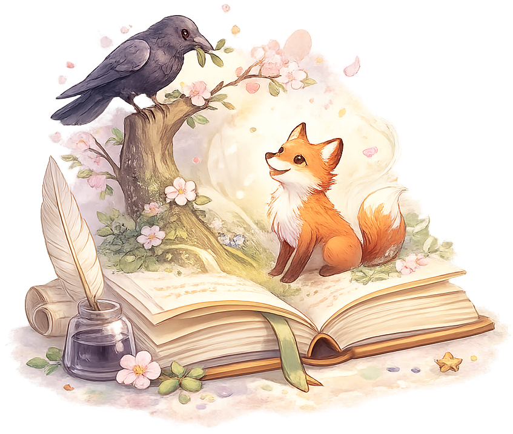

La Cigale, ayant chanté
Tout l’été,
Se trouva fort dépourvue
Quand la bise fut venue.
Pas un seul petit morceau
De mouche ou de vermisseau.
Elle alla crier famine
Chez la Fourmi sa voisine,
La priant de lui prêter
Quelque grain pour subsister
Jusqu’à la saison nouvelle.

Poésie
Zone de travail de l’enfant
Mémoriser ligne par ligne
Clique sur “Ligne 1”, “Ligne 2”… pour masquer ou afficher une ligne précise.
Ligne 1
La Cigale, ayant chanté
Ligne 2Tout l’été,
Ligne 3Se trouva fort dépourvue
Ligne 4Quand la bise fut venue.
Ligne 5Pas un seul petit morceau
Ligne 6De mouche ou de vermisseau,
Bloc récitation · même analyse que lecture
Réciter la poésie
Masque le texte, démarre l’enregistrement, puis l’app compare ta récitation à la poésie originale.
La transcription automatique apparaîtra ici. Tu peux la corriger avant d’analyser.